第217期
トレーディア新聞社
定価 無料
新聞THE TREDIA SHIMBUN
夏季
本日14面
1面総合
蒼森、ブロースコーグを喪失
人口千人の新都エクホルン
人口は千人 食料ゼロ継続 泰平はテキスタンの大都市と都市を追加占領
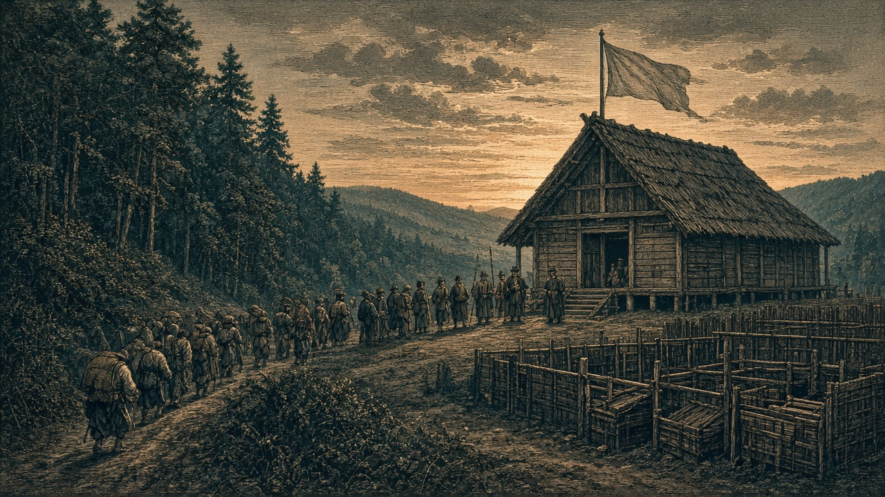
【総合部】第217期、蒼森辺境伯領は首都ブロースコーグ（20,10）を失い、隣のエクホルン（21,10）へ首都を移した。人口は前期の四千八百人から千人へ落ち込み、食糧はゼロ。飢えによる死者が相次ぎ、新都の通りには遺体が残されたままになっている。運び出したり弔ったりする人手もなく、遺体に布をかける者さえ見当たらない。住民が絶えた集落も各地で確認され、いくつもの村が事実上消滅した。残った人々は食べ物を求めて役所や倉庫跡に集まるが、配給に回せる穀物はない。人口の急減と暴動が重なり、辺境伯領は存続の瀬戸際に立つ。
泰平天国はテキスタン共和国の大都市（34,10）と都市（33,11）を占領し、食糧七万五百トンを接収した。公報損害は泰平二千百人、テキスタン一万八千三百人。テキスタン軍は弾薬不足で剣と槍を手に応戦し、泰平の装甲部隊は砲兵陣地へ相次いで突入した。首都テキシャは残るが、北側の都市と補給拠点は失われた。カペレナ王国も藍岬の町（84,22）を占領し、食糧三万五百トンを持ち去った。
外交地図も塗り替わった。青海共和国とスルガ、黒潮自治国と金野伯爵領が停戦で合意し、両戦争が終結。一方、オリョルッル王国は胡椒帝国へ、黄砂同盟はスルガへ宣戦した。なのです主義人民共和国は陣営「魔王軍」を結成し、魔帝鈴木が盟主に就任。黒潮の潮見玄吾議長は陸上四区画の確保を掲げ、世界進出を宣言した。対話と善隣を説く魔帝と、諸国を従えると語る潮見――二人の声明は6面で詳報する。今期の火災は二十三件、人口減は八万七千九百人。9面は平和を保つあろあろ国を特集した。
| 今期の主な数字 | |
|---|---|
| 蒼森人口 | 1,000人 |
| 新首都 | エクホルン（21,10） |
| 泰平×テキスタン | 2,100／1万8,300 |
| 徴発食糧（泰平） | 7万500トン |
| 藍岬町占領徴発 | 3万500トン |
| 停戦合意 | 青海×スルガ／黒潮×金野 |
| 開戦 | オリョルッル×胡椒／黄砂×スルガ |
- 2面蒼森遷都詳報
- 3面テキスタン続報
- 4面停戦と開戦
- 5面藍岬・諸戦線
- 6面魔帝鈴木と潮見声明
- 7面火災八万七千人
- 8面航路の決まり
- 9面国特集 あろあろ
- 10面夏の空
- 11面果物積みの夜
- 12面入門 遷都
- 13面短信
- 14面編集後記
2面国際 蒼森
遷都
ブロースコーグを失い、エクホルンへ
人口千人 暴動は新都でも 黒潮は停戦を打診
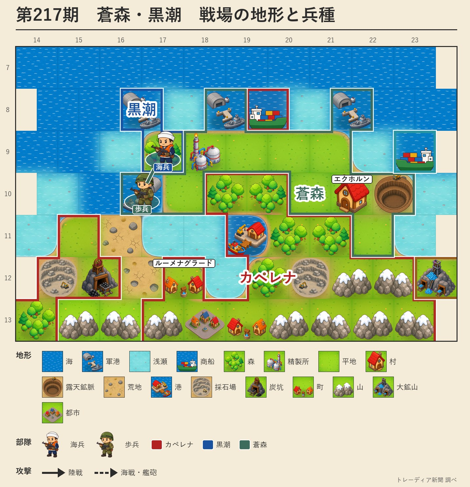
【政治部】蒼森辺境伯領では飢餓による死者が各地で相次ぎ、人口は一期間で三千八百人減って千人となった。食糧はゼロ。配給所に人が集まっても、係員が渡せるものはない。エクホルンの通りには餓死した人々の遺体が残り、運び出す人も、弔う人も見当たらない。家の中で息絶えた住民を確かめる者さえおらず、戸口の閉ざされた家が増えている。住民が一人も残らず、地図に名をとどめるだけとなった集落も複数あるという。動ける者は最後の蓄えを求めて役所や倉庫跡を探すが、そこにも食べ物はない。領土は十二区画を保つ一方、暮らしを支える穀物は一トンも残っていない。
旧都ブロースコーグを逃れた住民の一部は、わずかな荷物を抱えてエクホルンへ流れ着いた。しかし避難先にも食糧はなく、家族を連れた人々は空き家や軒先で夜を明かす。市場の店は戸を閉ざし、衣類や道具を差し出しても交換する食べ物が見つからない。人が減るにつれて遺体を運ぶ手も、倒れた者を介抱する手も失われた。人口千人という公報の数字の背後で、配給も商いも弔いも止まり、町は生き延びるための営みを次々と失っている。
黒潮との陸戦では蒼森Corps1歩兵が平地（17,9）の海兵を攻撃し、五百人に損害を与えた。しかし反撃で千百人を失い、平地を取り戻せなかった。当期の公報損害は蒼森千百人、黒潮五百人。兵の損失が重なる一方、後方では飢えた住民を救う手立ても尽きかけている。黒潮は蒼森へ停戦を打診したが、合意には至っていない。黒潮と金野の戦争は別途、今期の停戦合意で終結した。
カペレナ王国は第218期の宣戦控えを残し、蒼森周辺で整地と部隊設置を続けている。旧都を失い、配給も途絶えた辺境伯領に、次の攻撃を受け止める余力はほとんどない。新都では役所の看板が掛け替えられても、徴税や命令を担う人手が足りず、配給を再開する穀物もない。次期に人口と領土を保てるのか、蒼森の存続そのものが危ぶまれている。
| 蒼森辺境伯領 | |
|---|---|
| 人口 | 1,000人 |
| 兵力 | 6万4,400人 |
| 食料 | 0トン |
| 首都 | エクホルン（21,10） |
| 旧都 | ブロースコーグ（20,10） |
| 交戦国 | 黒潮（打診あり） |
人口は千人、食糧はゼロ。新首都の通りには餓死者の遺体が残され、運ぶ人手も尽きた。住民がいなくなった集落も複数にのぼり、地図に領土が残っていても、そこで暮らしを営む人々は消えつつある。軍の兵力を公報上で保っていても、住民を養い、役所を動かす食糧と人手がなければ国土を守れない。蒼森に残された時間は短く、次期の人口・食糧・領土の数字は、辺境伯領が国家として持ちこたえたかを示すことになる。

エクホルン 森の粉屋
新しい都にも、一袋を。
麦粉・乾し茸。
蒼森・エクホルン
3面国際 テキスタン
続報
泰平、テキスタンの大都市と都市を占領
食糧7万500トンを徴発 損害2,100／1万8,300 首都テキシャは残る
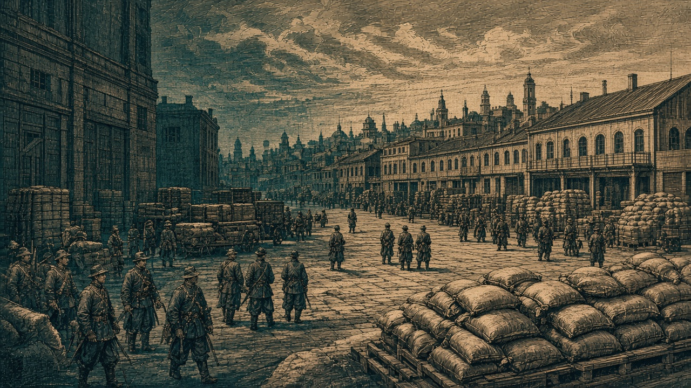
【軍事部】泰平天国軍はテキスタン共和国北部の大都市（34,10）と都市（33,11）を占領し、食糧計七万五百トンを接収した。公報損害は泰平二千百人、テキスタン一万八千三百人。泰平軍は装甲部隊と砲兵を投入し、テキスタン側の砲兵陣地や歩兵部隊を攻撃。共和国軍は弾薬不足のまま、剣と槍で防戦した。首都テキシャ（36,14）はなおテキスタン領に残る。
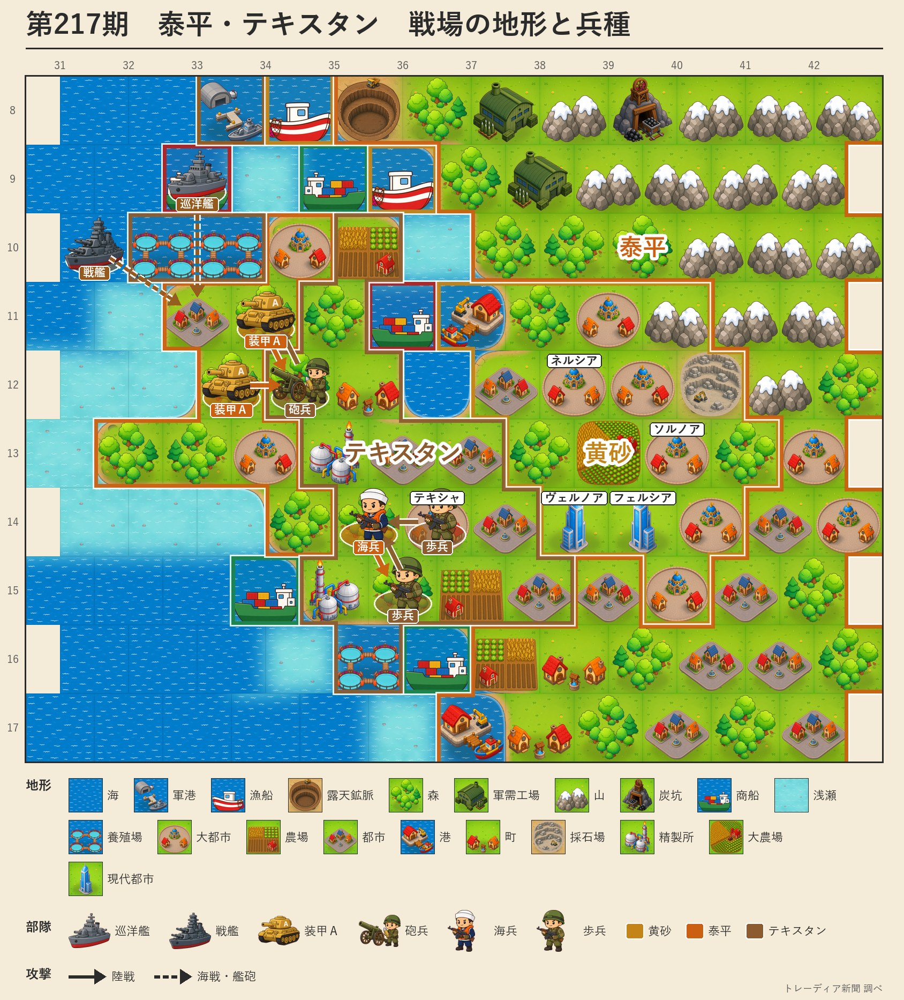
首都周辺では海兵と歩兵の交戦が続き、共和国防衛隊も反撃に出た。テキスタン軍は弾薬の補給を欠き、火器を十分に使えないまま、泰平の装甲車両と砲兵に向き合った。オリョルッル王国はテキスタンへ停戦を打診しており、共和国にとっては泰平との戦線を残したまま二正面を避ける交渉となる。
| 今期の占領（泰平） | |
|---|---|
| 大都市（34,10） | 食糧3万7,100トン |
| 都市（33,11） | 食糧3万3,400トン |
| 合計徴発 | 7万500トン |
テキシャは残ったが、北側の都市二つと備蓄七万五百トンを失った。弾薬不足が続けば、前線の兵は武器を持っていても砲撃に応じられない。首都を守るには兵員の再配置と弾薬の確保、さらにオリョルッルとの停戦交渉を並行して進める必要がある。

天都 星見の茶房
号外のあとに、一杯。
番茶・塩豆。
泰平・天都
4面国際 停戦と開戦
合意
青海×スルガ、黒潮×金野が停戦
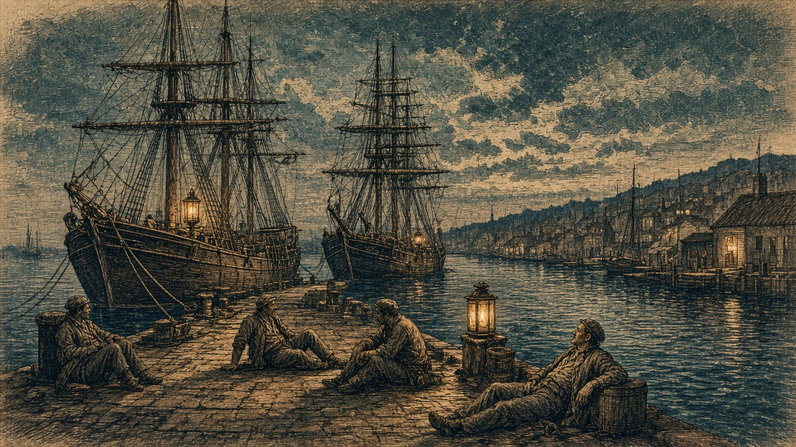
【国際部】青海共和国とスルガ、黒潮自治国と金野伯爵領がそれぞれ停戦合意に達し、二つの戦争が終結した。双方の受諾が公報で確認され、前線の交戦は停止。スルガは青海との戦線を閉じ、黒潮は金野との長い戦争に区切りをつけた。
停戦後、スルガの交戦相手はカペレナ、オリョルッル、胡椒、黄砂の四国。黄砂は今期スルガへ宣戦しており、新たな戦線が開いた。黒潮の交戦相手は蒼森のみとなったが、同国へは黒潮側から停戦を打診した段階で、合意は成立していない。
開戦
オリョルッル×胡椒、黄砂×スルガが開戦
第217期の予定どおり、オリョルッル王国は胡椒帝国へ、黄砂同盟はスルガへ宣戦した。新たな両戦線では当期の損害計上はない。オリョルッルは黄砂にも宣戦を予定していたが、停戦後の相互不戦期間に当たり、第222期まで布告できず中止された。外交上の予定と実際の開戦時期が一致しない例となった。
| 組 | 状態 |
|---|---|
| 青海×スルガ | 停戦合意 |
| 黒潮×金野 | 停戦合意 |
| オリョルッル×胡椒 | 開戦 |
| 黄砂×スルガ | 開戦 |
| オリョルッル→テキスタン | 打診 |
| 黒潮→蒼森 | 打診 |

セルヴァナ 潮見計器
停戦の週も、方位を確かめる。
方位盤・気圧計。
青海・セルヴァナ
5面国際 諸戦線
藍岬
カペレナ、藍岬の町を占領 食糧3万500トン
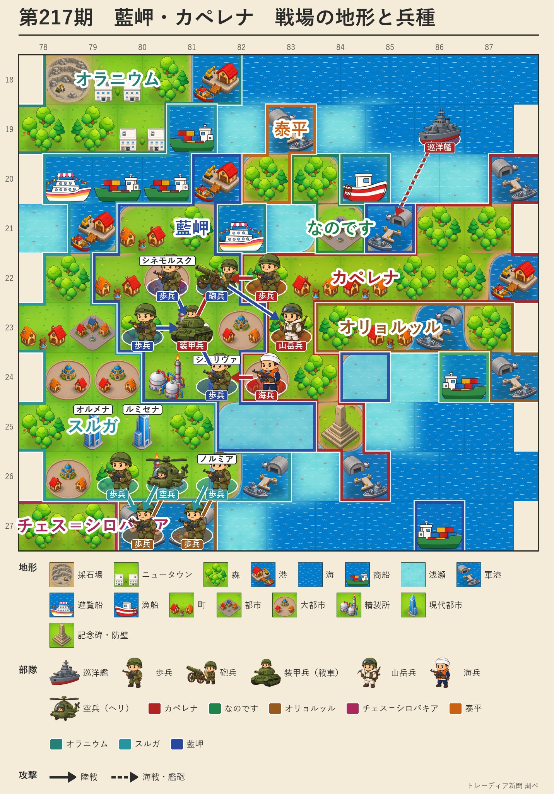
公報損害は藍岬一万二百人、カペレナ千人。西進隊の海兵に加え、カペレナの装甲部隊と歩兵がシネリヴァ周辺で攻勢をかけ、藍岬軍は砲兵を失いながら後退した。町（84,22）はカペレナ領となり、食糧三万五百トンを接収。艦砲も町へ命中し、住民の人口は戦闘前後で百人単位の減少を記録した。
藍岬の人口は四万三百人、領土は十五区画。港と町を失えば、食糧だけでなく沿岸の輸送拠点も削られる。カペレナ軍は西進を続け、藍岬側は残る都市と海岸線を守るため部隊を組み直す局面に入った。
続報
スルガ・翠湖で損耗 白波も三正面の戦い
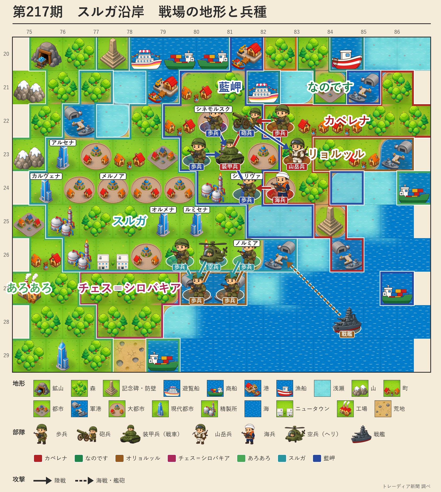
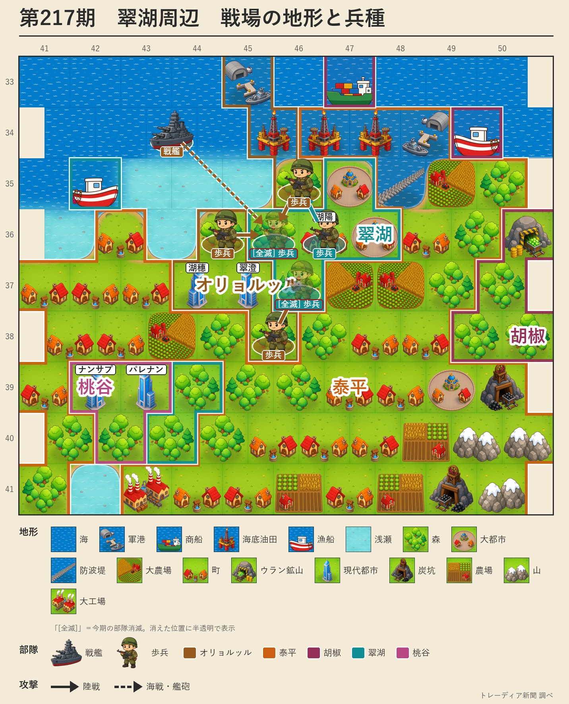
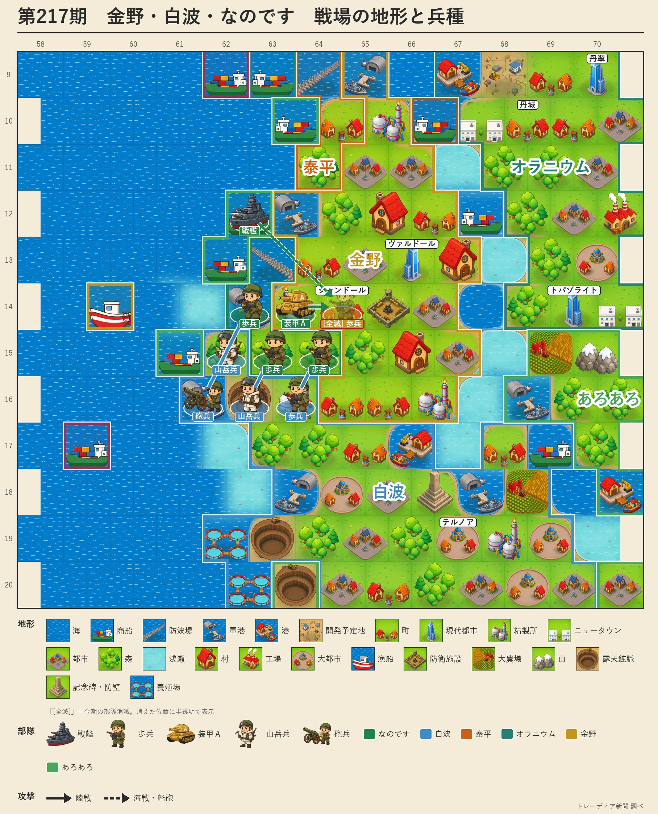
スルガ対オリョルッルの損害はスルガ七千百人、王国三千百人。スルガは青海との停戦合意で戦線を閉じた直後、黄砂から宣戦を受けた。オリョルッルとの損害はスルガ七千百人、王国三千百人。黄砂との新戦線では当期の損害計上がなく、沿岸防衛の再配置が急がれる。翠湖対オリョルッルは翠湖三千九百人、王国二百人。翠湖の歩兵二部隊が消滅し、残る部隊も後退を強いられた。なのです対白波はなのです四千八百人、白波二千五百人。白波は四万人を予備兵へ加え、三正面への補充に動いた。なのです軍は橙原の海底都市を占領し、資金百億円を接収。各国は停戦で空いた兵力を、新たな戦線や残る戦域へ振り向けている。

シネモルスク 染物屋
戦火のあとに、藍を干す。
藍布・塩魚。
藍岬・シネモルスク
6面国際 声明
魔王軍
魔帝鈴木、善隣と対話を掲げ就任
魔王軍本部はセントラ大陸南部ポートプラズマーに設置
【国際部】なのです主義人民共和国を盟主とする陣営「魔王軍」が発足し、セントラ大陸南部の都市ポートプラズマーに本部を置いた。陣営担当の魔帝鈴木はポートプラズマー市政府に勤める人物で、初代盟主就任の挨拶に立ち、善隣友好と相互経済発展を通じて世界平和に貢献すると表明した。
「魔王軍という名に恐れを抱かれる向きもあるでしょう。ですが私たちは、隣国との話し合いを何より大切にします。争いより対話を、奪うより分かち合う道を選びます」と鈴木は微笑んだ。「互いの市場を開き、航路を整え、働き手が安心して暮らせる経済をつくること。それが魔王軍の第一の務めです。世界の平和に、地味でも着実に寄与したい」
「豊かさは港や倉庫に積み上げるだけでは意味がありません。凶作や災害に見舞われた隣国には、余剰の食料や医薬品を融通し、復興に必要な技師も送りましょう。交易で生まれた利益が、そこで暮らす人々の食卓や学びに届く仕組みを整えたいのです」と鈴木は続けた。国境を越えた救援協定や奨学制度にも触れ、「隣人が安心して暮らせることが、私たち自身の安心にもつながります」と語った。
鈴木は加盟を希望する国に対し、交易協定や市民交流から関係を深めたいと呼びかけた。陣営の加盟国は現在、盟主のなのです主義人民共和国一か国。市政府の職員として都市運営に携わってきた経験を生かし、ポートプラズマーを外交と商談の窓口にする考えも示した。
※CPUは人ではないので対話は不要
黒潮
潮見議長、黒潮の世界進出を宣言
「いずれ諸国は威光のもとにひれ伏す」 過激発言で演説中断も
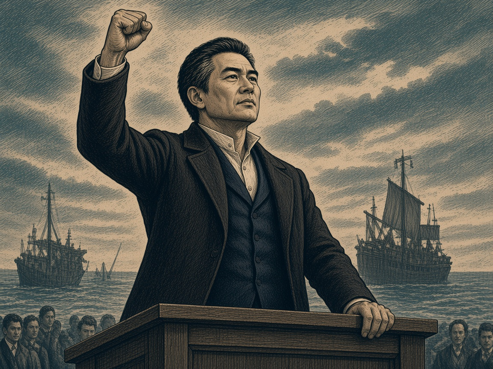
【政治部】陸上四区画を確保した黒潮自治国の潮見玄吾議長は、沿岸の演壇で世界進出を宣言した。海底から再び陸へ拠点を得たとして、占領地を足がかりに港と航路を広げ、各国に黒潮の威勢を示す方針を語った。
「我々は海の底から戻り、四つの陸上区画を掌握した。これが終着点ではない。海路を押さえ、各地に黒潮の旗を掲げる。世界進出はここから始まる」と潮見は宣言。「やがて諸国は黒潮の威光の前にひれ伏す。海底で耐えた歳月は、支配の力を蓄えるためにあった」と続けた。
「陸の港を得た以上、黒潮は沿岸の安全にも責任を負う。航路を脅かす者を退け、通商の規則を我々が定める。各国はその秩序のもとでこそ、安心して船を出せる」と潮見は語り、確保した区画を今後の進出を支える拠点と位置づけた。周辺国には黒潮の決定を受け入れるよう迫り、「海の道を使う国は、海を治める者の意思を尊重すべきだ」と述べた。
「我々がつくる秩序こそ世界平和だ。諸国が黒潮の旗の下に従えば、争いは消える」と潮見は言い切った。「黒潮の秩序を受け入れる国には交易の道を開く。逆らう国に、海も陸も安穏な場所はない。世界地図の果てまで我が名を届かせる」と声を強めると、会場から「征服を平和と呼ぶな」と抗議が上がった。議長は言葉を重ねようとしたが、運営役が演壇に寄り、会場は一時中断。ざわめきが収まるのを待って演説は再開された。潮見は最後に「この進出を止める者が現れても、黒潮は退かない」と言い切った。
フィルノア跡 潮見計器
港の灯りの週も、方位を。
方位盤・気圧計。
黒潮・外洋航路
7面社会 火災
災害
火災二十三件 人口減は八万七千九百人
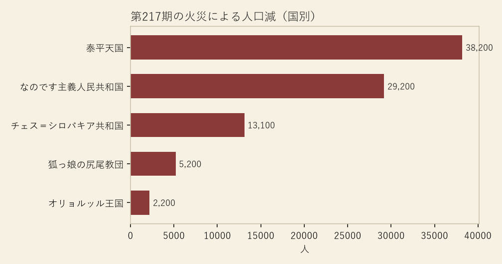
【社会部】第217期の火災は二十三件、火災前後の人口集計で八万七千九百人減となった。泰平天国が三万八千二百人で最も大きく、なのです主義人民共和国は二万九千二百人、チェス＝シロバキア共和国は一万三千百人。三国だけで全体の九割を超える。
狐っ娘の尻尾教団では五千二百人、オリョルッル王国では二千二百人の人口減を記録した。泰平では町や都市が各地で焼け、なのですでも複数の市街区に火が広がった。火災の件数より、人口の密集した町で発生したかどうかが被害の規模を左右している。
焼失した工場や家屋を建て直すには木材と石材、働き手が要る。戦時下では兵員や輸送船を復旧に回せず、商店の再開も遅れる。今期は人口減の大きい国が戦線も抱えており、徴兵・補給と市街再建のどちらに資材を振り向けるか、次期の各国運営を左右しそうだ。
電都 粉挽き組合
焼け跡のあとに、新しい粉を。
麦粉・雑穀。
なのです・電都
8面経済・国土
相場
弾薬は8.60 損害はテキスタン戦が最大
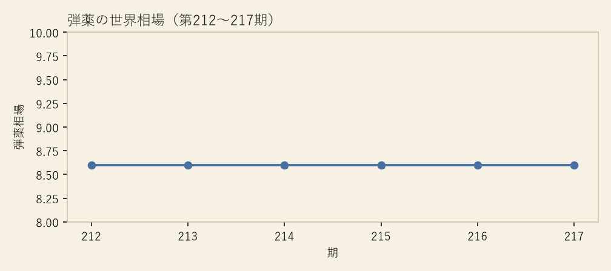
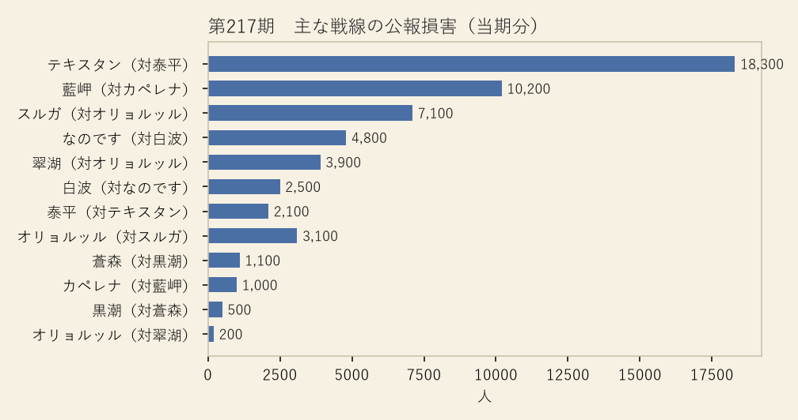
決まり
商船の航路と宣戦時の契約船を見直し
【経済部】商船の航路計算が変わり、途中にいる船を障害物として避ける迂回路を探さなくなった。商船は進めるところまで航行し、船が航路をふさいでいれば道が空くのを待ってから再び進む。港の入口に船がいても出航や港への援助を受け付け、通れる時機を待つ。陸地、漁場、見えている機雷や残骸、交戦国の港は従来どおり航路を塞ぐ。
宣戦によって届けられなくなった契約船は、宣戦待ちの段階も含めて直ちに送り主の港へ帰る。荷を積んで航行中の船が相手国に着けず、海上に取り残される事態を減らす措置だ。陣営加入の審査では過去の離脱・追放を数える期間を四十八期から直近二十四期へ短縮。CPUは自国との合意を取り消された場合、それを敵対行為として扱わない。
陸上を失ったCPU国の反攻では、海兵を降ろした駆逐艦が海岸近くにとどまり、上陸部隊を艦砲で援護する。今回の黒潮のように海から陸へ足場を伸ばす戦いを想定した調整だ。商船の航路、契約荷の帰港、陣営加入審査、上陸援護と、更新はいずれも外交と輸送の現場に関わる。
金野伯爵領からなのです主義人民共和国へ三万一千七百人が移住した。

諸国算盤店
航路の手数を、珠で確かめる。
算盤・台帳。
各地の算盤店
9面国特集 あろあろ国
国特集
あろあろ国 果実の都と、戦争のない週
人口79万6,700 兵力63万5,400 領土186 戦争なし
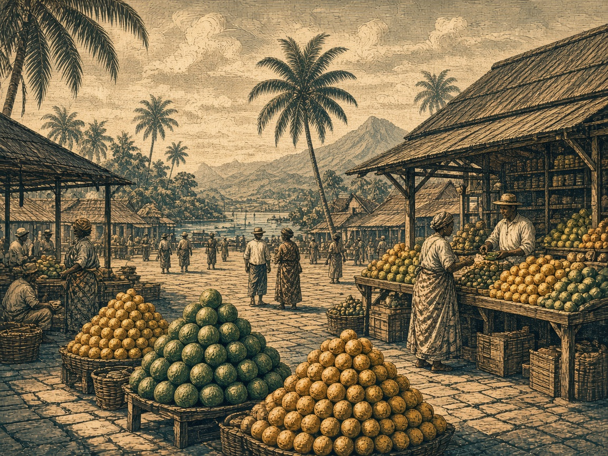
【特集部】あろあろ国は人口七十九万六千七百人、兵力六十三万五千四百人、領土百八十六区画。食糧は二百一万九千四百トン、国庫は一万七千九百八十九億円。現在、交戦国はない。国の表明欄には、地図から消えた国を惜しむ「ここちょっと消えてますね。（国ID）6番という国家がいたんですけど」と記されている。
首都アロランドの果実市では、熟した実を木箱に分け、傷のあるものは果実水や煮込み用へ回す。通りには果実水屋と包み焼きの店が並び、夕市では具を客が選ぶ「具待ち」の串が煙を上げる。青海から十一万を超える移民を受け入れた前期のあと、荷車が行き交う通路は一段と混み合った。店主ミラ・アロは「朝は仕入れ、昼は仕込み、夕方は市。いち日を三つに切って働いている」と笑う。
人口と兵力の双方が大きい国だけに、果実の集荷や市の運営にも人手が集まる。港では商船の積み荷が増え、町の職人は木箱や瓶、包み紙を納める。前期に到着した移民は果樹園の収穫や荷役にも加わり、アロランドでは朝市の始まる時刻が早まったという。交易を伸ばす一方で、住宅や水場の整備も追いつかせる必要がある。次号はチェス＝シロバキア共和国を取り上げる。
| あろあろ国 | |
|---|---|
| 人口 | 79万6,700人 |
| 兵力 | 63万5,400人 |
| 領土 | 186区画 |
| 食料 | 201万9,400トン |
| 国庫 | 1万7,989億円 |
| 戦争 | なし |
果実市、包み焼き「具待ち」、果実水屋ミラ・アロ、串「煙三本」。
アロランド 果実水屋
市のあとに、一杯。
果実水・塩。
あろあろ・アロランド
10面気象
実況
夏の空 曇りが多く雪はほぼ消える
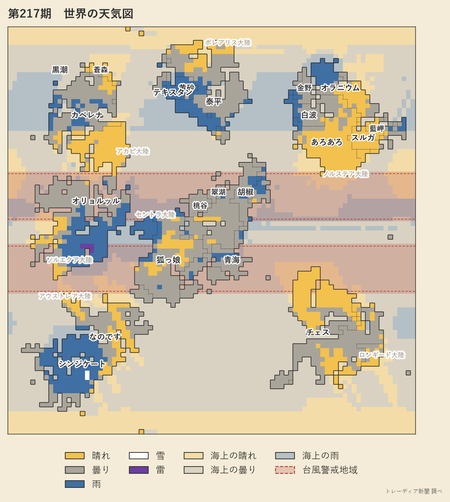
晴れ二千十九、曇り四千七百九十五、雨千二百八十、雪二、雷四。全八千百区画のうち曇りが約六割を占め、晴れは前期より百二十六区画増えた。雨は千二百六十三から千二百八十へわずかに増え、雪は九十から二へ減少。夏の気温分布が広がり、北方の降雪はほぼ姿を消した。
台風警戒帯は例年どおり図上で示される。港の出入りや長距離航海を予定する商船は、予報図と海流図を並べて航路を選びたい。陸上では、雲が多い地域と雨域が重なるかを見て、農地や収穫の予定を立てる材料となる。
見通し
第218期予報 沿岸は警戒帯を確認
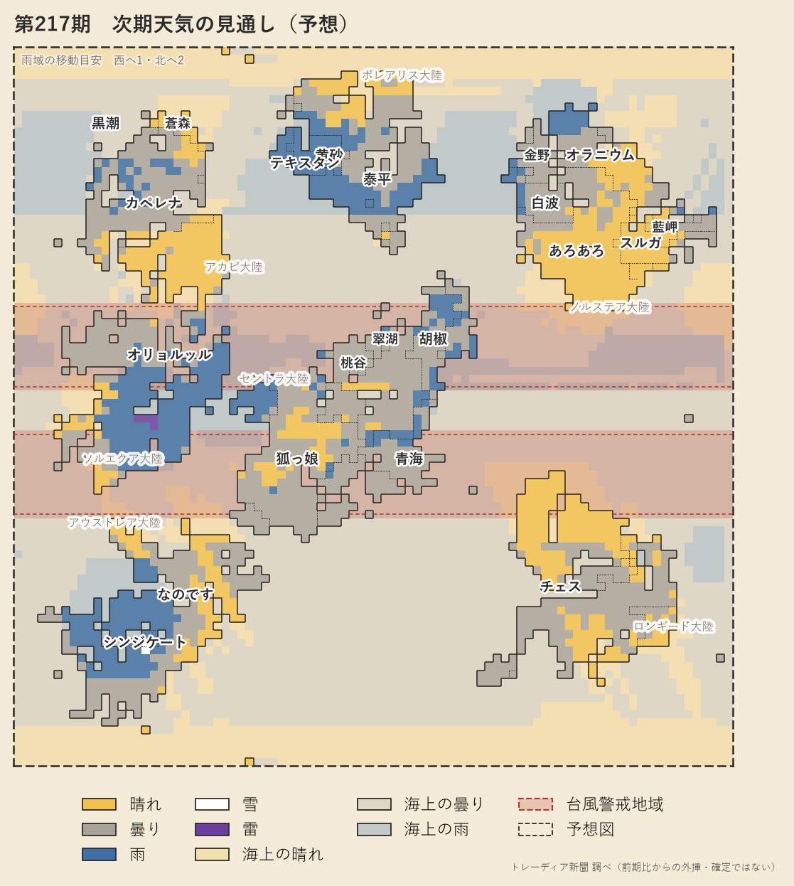
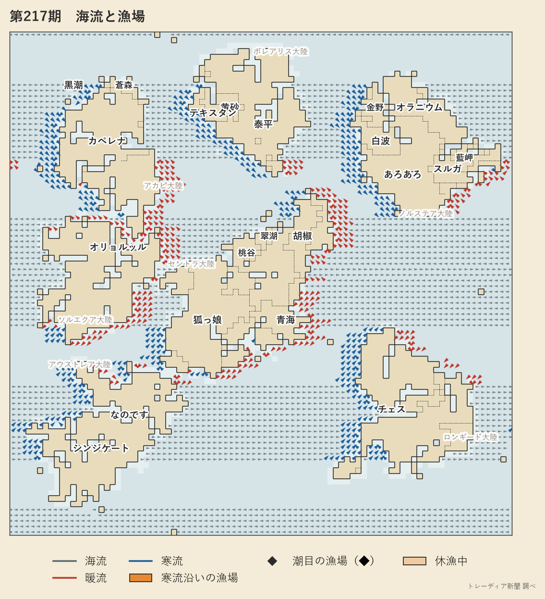
天都 和紙店
号外の紙を、整え直す。
和紙・朱墨。
泰平・天都
11面文化
行事
果物積みの夜 荷崩れ寸前の塔に歓声
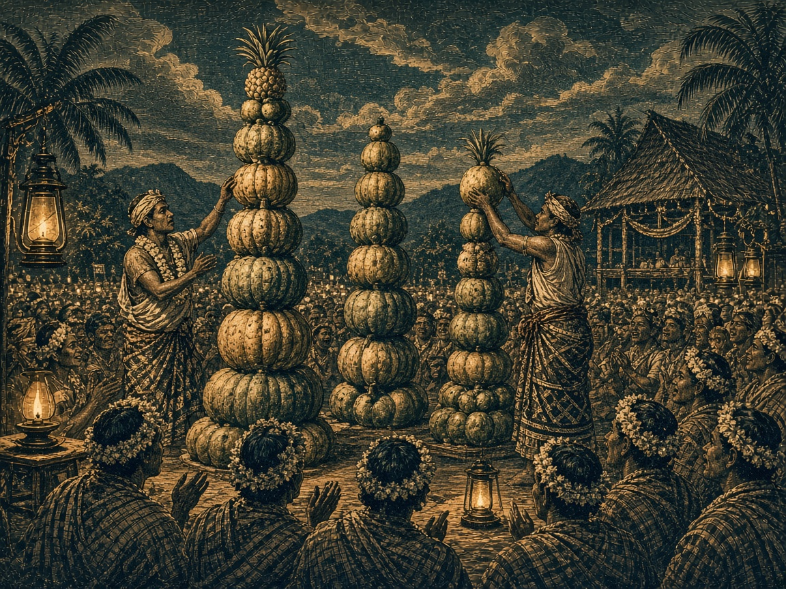
【文化部】あろあろ国の首都アロランドで、夏恒例の果物積みくらべが開かれた。出場者は果実市から選んだ梨、赤い実、細長い柑橘などを、木箱を台にして一段ずつ積み上げる。夕暮れに始まった競技は油灯が灯る時刻まで続き、塔が傾くたびに見物人から歓声とため息が上がった。
審査役は高さだけでなく、果実の重さを支える組み方や、色の並べ方も見た。三位までの台にはそれぞれ異なる品種が積まれ、優勝者は頂上に小さな金色の葉を飾った。老練の商人ベルガは「崩れる一歩手前が、いちばん美しい」と繰り返す。荷を積む手つきと見せる工夫が一体になった市の催しだ。
競技の後は、傷のついた実を包み焼きの具や果実水へ回す。積み上げた果物を無駄にしない仕分けまでが祭りの段取りで、店先では夜更けまで買い手が続いた。祭りを手伝った若者は、翌朝には市場の荷運びへ戻る。果実市は見物の場であると同時に、生産者、商人、料理人が次の取引を結ぶ場でもある。
| 果物積みくらべ | |
|---|---|
| 場所 | アロランド果実市 |
| 見どころ | 油灯・果実の塔 |
アロランド 包み焼き
積みくらべのあとに、一切れ。
具待ち・串。
あろあろ・アロランド
12面入門講座
入門第65回
遷都 都を失ったあとに名を移す
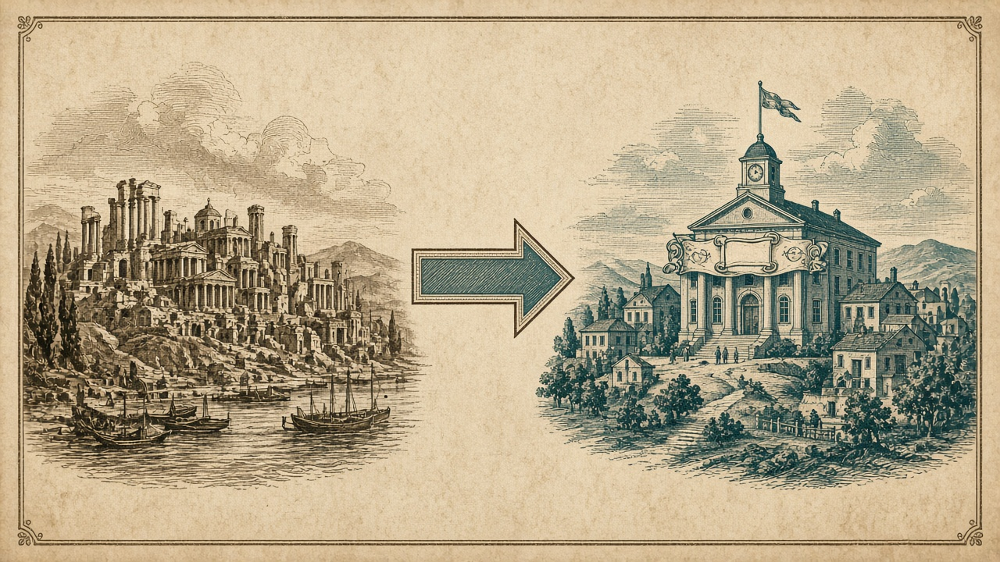
【編集部】遷都は、旧首都を失った国が新しい都市を政府所在地に定める手続きだ。公報には旧都の喪失と新都の座標が記され、国の都市一覧も更新される。地図上で新都の名前を確認し、国勢欄の人口、食糧、領土を併せて見ると、政府機能の移転と国の立て直しを区別できる。
今期の蒼森はブロースコーグ（20,10）を失い、エクホルン（21,10）へ首都を移した。人口は四千八百人から千人へ減り、食糧はゼロ、新都でも暴動が起きた。遷都の記録が伝えるのは政府所在地の変更であり、住民や倉庫の回復には配給と復旧の手立てが別に要る。
旧首都を失った後は、新都に役所を置いて命令や徴税を再開できるかが課題になる。新聞では①旧都の座標、②新都の座標と名称、③移転後の人口・食糧・領土、④戦闘が続くかを順に確認したい。都市名が変わっただけで国勢全体が戻ったと読まず、各数字を前期と比べれば統治の実態が見える。
- 旧都の喪失と新都の宣言を分ける
- 名前付き都市の一覧で確認する
- 人口・食料は遷都と別に読む
諸国算盤店
都の移りを、珠で確かめる。
算盤・台帳。
各地の算盤店
13面短信
蒼森 ブロースコーグを失い、エクホルンへ遷都。人口は4,800人から1,000人へ、食糧0。新都でも暴動。黒潮との戦闘損害は蒼森1,100人、黒潮500人。
泰平×テキスタン 泰平軍が大都市（34,10）と都市（33,11）を占領。損害は泰平2,100人、テキスタン1万8,300人。食糧7万500トンを接収、テキスタン軍は弾薬不足で剣と槍で応戦。
停戦合意 青海共和国とスルガ、黒潮自治国と金野伯爵領が合意し、二つの戦争が終結。
開戦 オリョルッル王国が胡椒帝国へ、黄砂同盟がスルガへ宣戦。双方とも今期の損害計上なし。
カペレナ×藍岬 カペレナが町（84,22）を占領し、食糧3万500トンを接収。損害はカペレナ1,000人、藍岬10,200人。
魔王軍 なのです主義人民共和国が陣営を結成し、初代盟主に就任。魔帝鈴木は善隣と対話を掲げた。
黒潮 軍港（16,8）を確保し、陸上領土は4区画。金野と停戦した一方、蒼森へ停戦を打診。潮見議長は世界進出を宣言。
なのです 橙原の海底都市を占領し、資金100億円を接収。白波との損害はなのです4,800人、白波2,500人。金野から3万1,700人が移住。
停戦打診 オリョルッル王国からテキスタン共和国へ、黒潮自治国から蒼森辺境伯領へ。どちらも今期は合意に至っていない。
セルヴァナ 桟橋茶舗
号外のあとに、一服。
麦茶・塩豆。
青海・セルヴァナ
14面編集後記
今号の数字で最も深刻なのは、蒼森の人口が一期間で三千八百人減り、千人となったことだ。旧都ブロースコーグを失い、エクホルンへ政府を移したが、食糧はゼロで新都にも暴動が起きた。遷都の公報は出ても、領民へ食事を届ける仕組みは戻っていない。
なのです主義人民共和国は「魔王軍」を結成し、魔帝鈴木は対話と善隣を掲げた。黒潮の潮見玄吾議長は金野との停戦をまとめる一方、蒼森へ新たな停戦を打診した直後に世界進出を宣言し、威圧的な言葉で領土拡大を語った。片方は加盟国を募り、片方は海岸の足場を広げる。声明の調子だけでなく、外交と軍事の実際を今後も照らし合わせたい。
戦場では泰平がテキスタンの大都市と都市を追加占領し、カペレナは藍岬の町を奪った。次号は第218期に控えるカペレナ対蒼森の開戦を前に、人口千人となった辺境伯領の防衛と配給がどう動くかを追う。